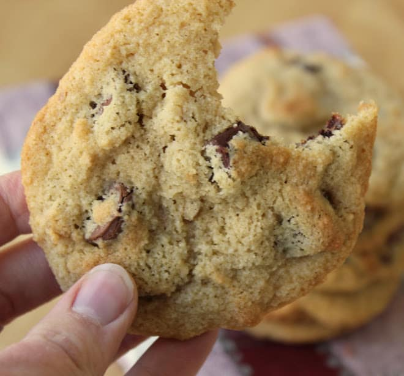

Almond Flour Chocolate Chip Cookies

Description
This chocolate chip cookie recipe is made with almond flour and honey so it is safe for those looking to limit sugar and carbs.
Even those of us watching what we eat need a sweet treat now and then!
Due to the honey I would not recommend it for children under the age of 1.
Ingredients
½ cup butter, softened
¼ cup coconut oil
¾ cup brown sugar or coconut sugar
2 teaspoons vanilla extract
2 large eggs
½ teaspoon baking soda
½ teaspoon salt
3 cups blanched almond flour
1 ¼ cups chocolate chips of choice
⅔ cup toasted walnuts, optional
Instructions
- Prehead oven to 350 and line baking sheet with parchment paper.
- Cream butter, coconut oil and brown sugar with mixer. Add vanilla and eggs, mixing til combined.
- Mix in baking soda and salt. Add almond flour 1 cup at a time, beating well.
- Fold in chocolate chips and walnuts with spoon.
- Form dough into tablespoon sized balls and set on baking sheet 3 inches apart.
- Bake 11-13 minutes until golden brown around edges.